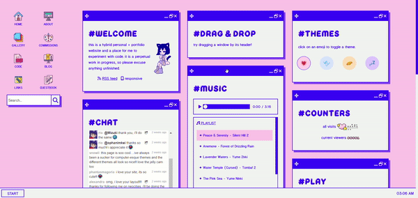

Site Overhaul
April 04, 2023
i started making this website around 3 weeks ago. if you told me then that within that time, i’d write the site, then re-write it with web components, then re-write it again except with a static site generator, i’d believe you. i have a near-pathological need for clear, simple, clean things. my closet is sorted by color and item type. i buy little desk dividers to keep my drawers tidy. the only icon on my desktop is the recycle bin.
so yes, i have marie kondo’d the site. this has happened before, so i probably should have anticipated it. i was already planning to make some changes, and then one thing just led to another.
new library
i have broken up with a few frameworks for muuri, an extremely versatile javascript library layout engine. seriously, it combines 3 (!!) frameworks i was using. AND enables the draggable windows. i’m still pretty intimidated by muuri as it requires a bit more configuration than i’m comfortable with yet, but i’m working it out. big thanks to this codepen for the gallery filter. anyways, look, drag and drop! 
{kind=link}
expect things to be buggy, especially on mobile. but what are you doing on mobile anyways…grow up! just kidding. i’ll debug it eventually. probably.
now built with hugo
you may also notice blog posts are different! that’s actually what started this whole endeavor. i finally decided that hugo is famous for building blogs for a reason and i’ve been wanting to learn more about taxonomies anyways. (now blog posts have tags and this lowkey looks like a tumblr blog. can’t help wandering home…)
moving the site to hugo was pretty agonizing at times, but i feel good about it. with the help of shortcodes and partials, i shrank my code to something much more manageable and legible. my gallery page went from 452 lines to 266 lines! the markup is shorter and much easier to understand. and markdown is just soo much easier to deal with than HTML. plus i finally finished moving (most of) my files off of dropbox and can rest assured they’re easier to sort.
before:
after:
another example, pulled from the links page.
before:
after:
see what i mean…that’s hugo baby…
comment sections & new guestbook
there are also now comment sections for blog posts!! i don’t really know how they work since they’re untested, but feel free to leave one? yeah. i also replaced the guestbook. i think the old guestbook service was cute and stuff, but it’s (1) not responsive, (2) not very customizable, (3) has ads, (4) an external site, and (5) has poor security practices. so we’ll see how that goes? yeah!
new content & RSS feed
i added a few windows to the home page! it now has a blog feed (btw, the RSS feed has been updated! old one is deprecated.) a few new links here and there, some formatting updates, the commissions page is slooowly in progress.
closing
anyways, it’ll be good to get this over with for now. i get really fixated on tasks and it’s hard to step away until it’s over with. (although, i did find the time to open submissions for cicada. blinks slowly at you.) i’ve been learning a ton about hugo and javascript lately and i think i want to pivot back to writing and drawing for a bit. oh, and i’m still moving technically LMAO.
hopefully the neocities CLI tool is actually easy to use and i don’t die. i know Nothing about ruby. i might make a few tutorials in the future, but i guess i worry about giving bad information since i suspect there’s still lots that i’m doing wrong. still, whatever works, works, so you can expect Something. i’ll get this site up on github soon enough. blegh. i’m tired.
ok talk to you later. here is a song for you.
EDIT: ok i’m in hell why is the site so slow. it is so fast on my machine and yet so slow on the internet. science explain. gonna compress my images some more. also note to anyone who may need to be reminded: remember to push your PUBLIC folder to neocities not your project folder. it won’t work and your heart will drop…trust me…